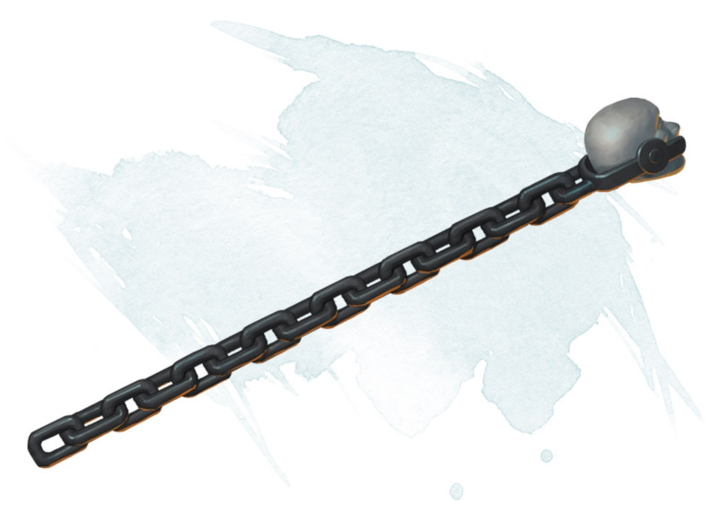

Baguette d'entraves
[ Wand of Binding ]
Baguette, rare (nécessite un lien par un lanceur de sorts)
Cette baguette possède 7 charges pour les propriétés suivantes. Elle récupère 1d6 + 1 charges dépensées chaque jour à l'aube. Lorsque vous dépensez la dernière charge, lancez 1d20. Sur un 1, la baguette tombe en cendre et est détruite.
Sorts. Lorsque vous tenez la baguette, vous pouvez utiliser une action pour dépenser des charges et lancer l'un des sorts suivants (sauvegarde DD 17) : immobilisation de monstre (5 charges) ou immobilisation de personne (2 charges).
Échappatoire. Lorsque vous tenez la baguette, vous pouvez utiliser votre réaction pour dépenser 1 charge et obtenir un avantage à un jet de sauvegarde pour éviter d'être paralysé ou entravé, ou dépenser 1 charge pour avoir un avantage à un jet pour s'échapper d'une situation de lutte.
Sorts. Lorsque vous tenez la baguette, vous pouvez utiliser une action pour dépenser des charges et lancer l'un des sorts suivants (sauvegarde DD 17) : immobilisation de monstre (5 charges) ou immobilisation de personne (2 charges).
Échappatoire. Lorsque vous tenez la baguette, vous pouvez utiliser votre réaction pour dépenser 1 charge et obtenir un avantage à un jet de sauvegarde pour éviter d'être paralysé ou entravé, ou dépenser 1 charge pour avoir un avantage à un jet pour s'échapper d'une situation de lutte.
Dungeon Master´s Guide (SRD)
